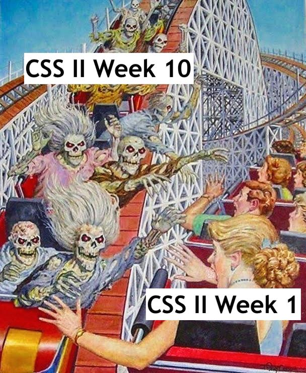

Lecture 3 (4/1/22)¶
Last time we covered:
Datahub and Jupyter notebooks
Jupyter markdown
Python basics: operations and data types
Today’s agenda:
Data structures: lists, dictionaries, sets
Loops & conditions
Functions

Data Structures¶
Lists¶
What is a list?
Ordered
Mutable
Variable items
Examples?
# Declaring lists
foo = list() # or just: foo = []
foo = ['bar', 'hello']
css_students = ['ancen', 'jiayi', 'adriana', 'michelle', 'tanvi']
css_students
# Adding and removing items: append, extend, insert, remove
css_students.append('glenn')
css_backrow = ['andres', 'starlee', 'advaith']
css_students.extend(css_backrow)
css_students.insert(0, 'new_student')
# css_students.remove('new_student')
# Accessing items: indexing, 'in'
if ('new_student' in css_students):
css_students.remove('new_student')
css_students
css_students[0]
css_students[1:]
css_students[1:-2]
# Note: indexing is really flexible (ranges, -1)
# bonus: len
len(css_students)
# Operations: sort, reverse
css_students.append('5')
css_students.sort()
# css_students.reverse()
css_students
# Can we put lists inside of lists?? Yes. Yes we can.
css_students.append(['more_students_yay'])
css_students
['5',
'adriana',
'advaith',
'ancen',
'andres',
'glenn',
'jiayi',
'michelle',
'starlee',
'tanvi',
['more_students_yay']]
# EXTRA BONUS: list comprehensions!!!
# Come back to this at the end of class if there's time...
Dictionaries¶
What is a dictionary?
key-value store
Not ordered
Mutable
Item type matters
Examples?
# Declaring dictionaries
foo = dict() # or just: foo = {}
foo = {'blah': 6, 'beep': 0, 'sigh': 3}
# Adding and removing items
foo['woo'] = 4
new_key = 'womp'
new_val = 10
foo[new_key] = new_val
del foo['womp']
foo
# Accessing items
# Note: can use `in` here as well!
if 'woo' in foo:
print("found woo!")
# bonus: 'keys', 'values', 'items'
foo.keys()
foo.values()
foo.items()
# This is a common and helpful way to loop through dictionaries!
for key, val in foo.items():
print(key)
print(val)
# Can we put a dictionary inside a dictionary?? Youbetchya! This is actually very common.
colors = {'R': 'red', 'O': 'orange'}
foo['color_lookup'] = colors
del foo['color_lookup']
# foo
foo['boop'] = 0
foo
foo['boop'] = 2
foo
found woo!
blah
6
beep
0
sigh
3
woo
4
{'blah': 6, 'beep': 0, 'sigh': 3, 'woo': 4, 'boop': 2}
Sets¶
What is a set?
Not ordered
Mutable
Variable items
Examples?
# Declaring sets
foo = set()
foo = set('hi how are you')
# bar = set('doing fine')
foo = {1, 2, 3, 4}
bar = {2}
# Adding and removing items: add, remove
foo.add('b')
foo.remove(2)
foo
# Set operations: &, -, |
dir(foo)
# Accessing items: bit tricky (use for loop, set operations, `pop`)
# In general, this is one reason sets aren't used very often!
# Can we put a set inside a set? ...
['__and__',
'__class__',
'__contains__',
'__delattr__',
'__dir__',
'__doc__',
'__eq__',
'__format__',
'__ge__',
'__getattribute__',
'__gt__',
'__hash__',
'__iand__',
'__init__',
'__init_subclass__',
'__ior__',
'__isub__',
'__iter__',
'__ixor__',
'__le__',
'__len__',
'__lt__',
'__ne__',
'__new__',
'__or__',
'__rand__',
'__reduce__',
'__reduce_ex__',
'__repr__',
'__ror__',
'__rsub__',
'__rxor__',
'__setattr__',
'__sizeof__',
'__str__',
'__sub__',
'__subclasshook__',
'__xor__',
'add',
'clear',
'copy',
'difference',
'difference_update',
'discard',
'intersection',
'intersection_update',
'isdisjoint',
'issubset',
'issuperset',
'pop',
'remove',
'symmetric_difference',
'symmetric_difference_update',
'union',
'update']
Loops & Conditions¶
for Loops¶
What is a for loop for? [aSk tHe ClaSs]
# for loop syntax: `for x in some_list`, `for x in range`, `for key, val in dict.items()`
# iterate through lists
for student in css_students:
print(student)
# print(range(0, 10))
# iterate through numbers
for num in range(0, len(css_students)):
print(css_students[num])
# looping through dictionary key/values
for key, val in foo.items():
print(key)
5
adriana
advaith
ancen
andres
glenn
jiayi
michelle
starlee
tanvi
['more_students_yay']
5
adriana
advaith
ancen
andres
glenn
jiayi
michelle
starlee
tanvi
['more_students_yay']
---------------------------------------------------------------------------
AttributeError Traceback (most recent call last)
<ipython-input-5-3dd327cd248a> in <module>
11
12 # looping through dictionary key/values
---> 13 for key, val in foo.items():
14 print(key)
AttributeError: 'set' object has no attribute 'items'
while Loops¶
What is a while loop for?
# while loop syntax: `while ...:`
index = 0
while index < 5:
print(index)
index += 1
# Note: CAUTION when using while loops
0
1
2
3
4
Conditions (if, else)¶
Conditional logic plays an important role in almost any coding problem! (see this famous coding problem)
# ifelse syntax ~inside a for loop~: fizzbuzz!
nums = []
for num in range(101):
new_num = num
if num % 3 == 0 and num % 5 == 0:
new_num = 'fizzbuzz'
elif num % 3 == 0:
new_num = 'fizz'
nums.append(new_num)
nums
['fizzbuzz',
1,
2,
'fizz',
4,
5,
'fizz',
7,
8,
'fizz',
10,
11,
'fizz',
13,
14,
'fizzbuzz',
16,
17,
'fizz',
19,
20,
'fizz',
22,
23,
'fizz',
25,
26,
'fizz',
28,
29,
'fizzbuzz',
31,
32,
'fizz',
34,
35,
'fizz',
37,
38,
'fizz',
40,
41,
'fizz',
43,
44,
'fizzbuzz',
46,
47,
'fizz',
49,
50,
'fizz',
52,
53,
'fizz',
55,
56,
'fizz',
58,
59,
'fizzbuzz',
61,
62,
'fizz',
64,
65,
'fizz',
67,
68,
'fizz',
70,
71,
'fizz',
73,
74,
'fizzbuzz',
76,
77,
'fizz',
79,
80,
'fizz',
82,
83,
'fizz',
85,
86,
'fizz',
88,
89,
'fizzbuzz',
91,
92,
'fizz',
94,
95,
'fizz',
97,
98,
'fizz',
100]
Functions¶
Understanding why we use functions, how to write them, and how things can go wrong are really important to coding at all levels. I can’t stress this enough!
We won’t have as much time to dedicate to functions as we should so if any of this feels shaky, please reach out!
What are functions for?
How to write them
If time: scoping
"""
Function cookbook
def name_of_function([optional: parameters]):
CODE HERE
[optional: return X]
"""
# Example: let's turn our fizzbuzz code above into a function!
# Add parameters
# Discuss: scope
# Ex. passing in the fizzbuzz list, modifying in the function w/o returning it
'\nFunction cookbook\n def name_of_function([optional: parameters]):\n CODE HERE\n [optional: return X]\n \n'